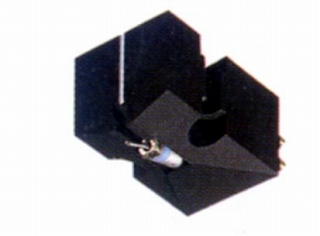
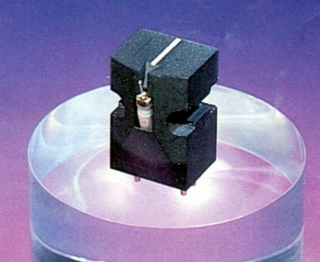
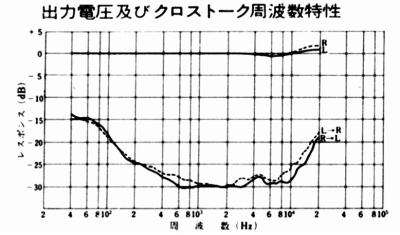
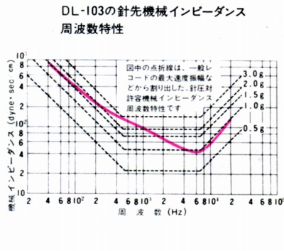
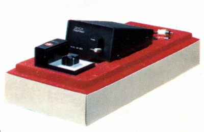
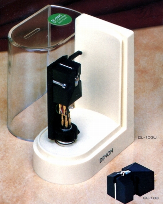

DL-103


■価格 16,000円
■発電方式 MC型
■出力電圧 0.4mV/1kHz
5cm/sec
■針圧 2.2〜2.8g（最適
2.5g）
■再生周波数帯域 20-30,000Hz±2dB
■チャンネルセパレーション 25dB以上/1kHz
20dB以上/10kHz
■チャンネルバランス 1dB/1kHz
■コンプライアンス 5×10-6cm/dyne
■負荷抵抗
■直流抵抗 40Ω
■インピーダンス 40Ω±20%
■針先 0.2mm角ソリッドダイヤ丸針（16.5ミクロン＝0.65mil）
■自重 8.5g
■交換針 交換不可（本体交換10,000円）
■発売
1966年4月
■販売終了 年
■備考 垂直トラッキング角 16度
出力電圧は
AU-301使用時 8mV/1kHz
5cm/sec
AU-320使用時 4mV/1kHz 5cm/sec
出力電圧は｢世界のオーディオ／ステレオサウンド編1973年版」のもの
ステレオサウンドの年鑑では、1977年版までは0.4ｍV、79年年度版では0.3mVになっている
価格は1970年頃のもの
1975年頃で19,000円（本体交換13,000円）
1993年時点で22,000円（本体交換14,300円）
2010年2月現在で26,000円


なおトランスとのセット販売もあった。

DL-103/T�U 29,000円
昇圧トランスAU-305とのセット販売、DL-103生誕15周年記念謝恩モデル
1978年6月発売 1985年頃まで販売
AU-305は単体発売されなかった模様。
型番の「�U」からみて以前にも同様の商品があったのかもしれない。
AU-305のスペック
■型式
MC型カートリッジ用昇圧トランス
■一次インピーダンス 40Ω
■二次インピーダンス 4kΩ
■負荷インピーダンス 50kΩ以上
■昇圧比 1：10
■周波数帯域 20-70,000Hz±1dB
■チャンネルセパレーション 60dB
■重量 720g
■寸法 W92×H55×D145�o
■備考 出力コード 1m
MM用バイパススイッチあり
他に1981年にシェル付きでDL-103Uという型番で販売された。

価格は21,000円、マグネシウム合金ヘッドシェル、オーバーハングは3�oピッチで可変。